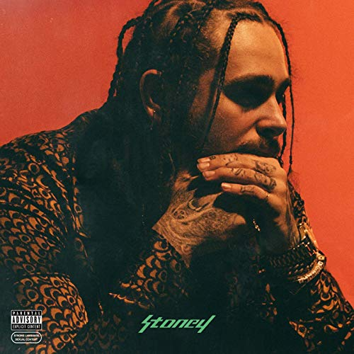

track list
01. Broken Whiskey Glass
02. Big Lie
03. Deja Vu (Feat. Justin Bieber)
04. No Option
05. Cold
06. White Iverson
07. I Fall Apart
08. Patient
09. Go Flex
10. Feel (Feat. Kehlani)
11. Too Young
12. Congratulations (Feat. Quavo)
13. Up There
14. Yours Truly, Austin Post
15. Leave
16. Hit This Hard
17. Money Made Me Do It (Feat. 2 Chainz)
18. Feeling Whitney
